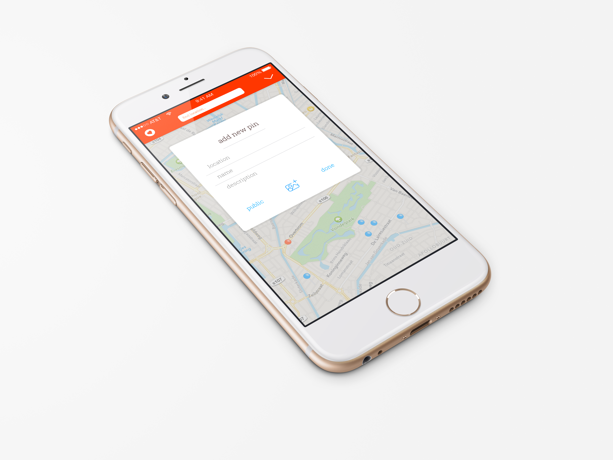
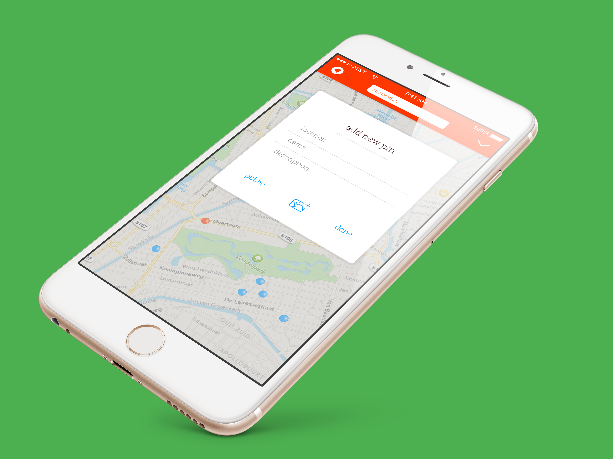
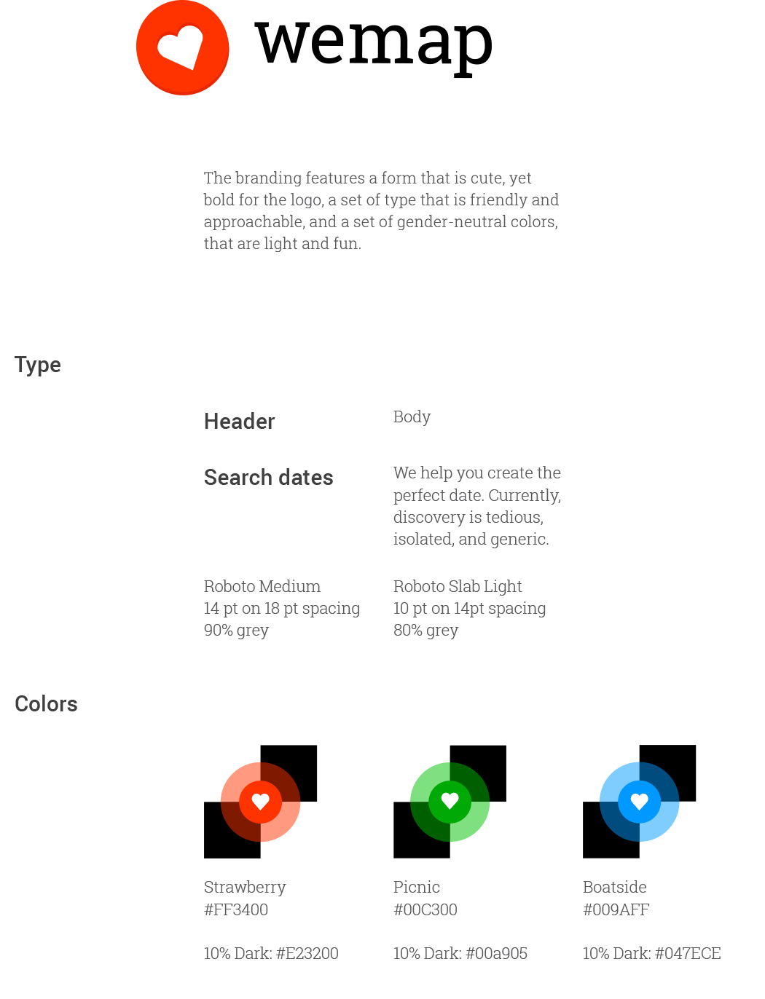

wemap
rapid prototyping, UI/UX, Interaction Design
wemap is a project that I worked on alongside Cliff. He had the idea to create an app for couples that allows them to catalog where they go for dates, and share those with other people. Coming up with an idea for a date can be really hard! I agreed to work on the project with Cliff because it sounded like a ton of fun. You can find the full .pdf of all of the screens here.

This is the home screen.

After swiping past a few on-boarding cards, this is the interface that the user sees to add a new pin, which is where all of the location-based information about the dates is held. Cliff and I determined that we would keep it simple by only allowing users to include a photo and small description.
This is what it looks like if a user is looking at a zoom in of an image. I put the image at 90% opacity so that it sits on the card nicely, making up for the amateur photography skills of the average wemap user. By making the cards swipe away, I was able to open up the screen real estate for a more open and clean feel.
I had a ton of fun with the settings page. This screen is the most complex screen in the whole app. It's also the most emotionally charged. This screen allows users to cheat on their s.o., break up with their s.o., and/or erase all memories of them. Whoa! I tried my best to simplify the information and system of linking accounts so that it would feel intuitive and not any extra stress to the procedure.

This is the style guide for wemap. Cliff gave me the challenge to do all of the branding in 2 hours (I ended up spending 4 by the time the project was all over. Full .pdf here.